Halo, Saya Fikri Ramadhan
Middle Software Quality Assurance Engineer
Saya berfokus pada menjaga kualitas perangkat lunak melalui pengujian yang ketat. Berpengalaman dalam menyusun Test Case, eksekusi Manual Testing, hingga membangun skrip Automation Testing untuk memastikan sistem berjalan tanpa cela sebelum menyentuh pengguna akhir, Serta memastikan performa aplikasi optimal dengan Performance Testing menggunakan jMeter.
500+
Test Cases Written
150+
Bugs Documented
85%
Automation Coverage
4
Tahun Pengalaman
Riwayat Pengalaman Kerja
Kontribusi saya dalam memastikan keandalan sistem di berbagai proyek.
QA Analyst
Bank Tabungan Negara
- Executed end-to-end functional and transaction testing for multi-channel banking systems, including M-Banking, Internet Banking, ATM, EDC, and Simulators.
- Validated data flow and backend transactions across Middleware and Core Banking infrastructures using advanced SQL queries.
- Performed RESTful API testing using Postman and load/stress performance testing using Apache JMeter.
- Developed comprehensive test cases, defect reports, and system documentation using qTest, MS Excel, and MS Word in an Agile workflow.
QA Engineer
Astra Internasional
- Managed QA operations for Business Intelligence and Logistics divisions across web and mobile application ecosystems.
- Designed and executed automated web regression test suites using Playwright (JavaScript) and version-controlled scripts via Git TFS.
- Verified complex database structures across Cloudera, SQL Server, and SAP using SQL queries, and tested BI reporting dashboards via Microstrategy.
- Conducted API endpoint testing with Postman and maintained end-to-end bug tracking and test management using Jira.
Manual QA
Tanihub
- Conducted manual functional and UI testing for B2C and B2B web applications and mobile platforms.
- Authored structured test cases in TestRail, logged and tracked application defects in Jira, and validated backend endpoints using Postman.
Keahlian & Alat Kerja
Metodologi dan teknologi yang saya kuasai untuk pengujian perangkat lunak.
Testing Types
Automation & API
Management & Tools
Automation Test
Script & Evidence
Playwright
PageObject.ts
import { test } from "../pageobject/base.page";
test.describe("Scenario Positive - Login Succes", () => {
// Masukkan 'stepScreenshot' di parameter callback test
test("As user i can login HRMOrange", async ({
loginPage, openBrowser, stepScreenshot
}, testInfo) => {
await openBrowser.openWeb();
await loginPage.login(testInfo);
await openBrowser.closeBrowser();
});
});
test.describe("Scenario Negative - Login Failed", () => {
test("As user i can't login HRMOrange with invalid username", async ({
loginPage, openBrowser, stepScreenshot
}, testInfo) => {
await openBrowser.openWeb();
await loginPage.invalidUsername(testInfo);
});
test("As user i can't login HRMOrange with invalid password", async ({
loginPage, openBrowser, stepScreenshot
}, testInfo) => {
await openBrowser.openWeb();
await loginPage.invalidPassword(testInfo);
// await stepScreenshot('01_Error_Invalid_Password'); // Evidence Step 1
});
});ScriptLogin.ts
import { Locator, Page, expect, TestInfo } from "@playwright/test";
import path from "path";
import fs from "fs";
export class LoginPage {
readonly page: Page;
private static sessionFolder: string = '';
constructor(page: Page) {
this.page = page;
if (!LoginPage.sessionFolder) {
const now = new Date();
const wibDate = now.toLocaleDateString('sv-SE', { timeZone: 'Asia/Jakarta' });
const wibTime = now.toLocaleTimeString('en-GB', { timeZone: 'Asia/Jakarta' }).replace(/:/g, '-');
LoginPage.sessionFolder = path.join('./evidence', `${wibDate}_${wibTime}`);
}
}
async takeScreenshot(scenarioFolder: string, stepNumber: number, testInfo?: TestInfo) {
const dirPath = path.join(LoginPage.sessionFolder, scenarioFolder);
if (!fs.existsSync(dirPath)) {
fs.mkdirSync(dirPath, { recursive: true });
}
const fileName = `${scenarioFolder}_${stepNumber}.png`;
const filePath = path.join(dirPath, fileName);
await this.page.screenshot({
path: filePath,
fullPage: true
});
if (testInfo) {
await testInfo.attach(fileName, {
path: filePath,
contentType: 'image/png',
});
}
}
async login(testInfo?: TestInfo) {
let step = 1;
await this.page.getByRole('textbox', { name: 'username' }).fill('Admin');
await this.page.getByRole('textbox', { name: 'password' }).fill('admin123');
await this.takeScreenshot('Login_Success', step++, testInfo);
await this.page.getByRole('button', { name: 'Login' }).click();
await this.page.waitForTimeout(3000); // Tunggu 3 detik agar halaman dashboard dapat dimuat sepenuhnya
await this.takeScreenshot('Login_Success', step++, testInfo);
} // -- Pastikan kurung kurawal penutup method login() ada di sini
async invalidUsername(testInfo?: TestInfo) {
let step = 1;
await this.page.getByRole('textbox', { name: 'username' }).fill('UsernameInvalid');
await this.page.getByRole('textbox', { name: 'password' }).fill('admin123');
await this.takeScreenshot('Invalid_Username', step++, testInfo);
await this.page.getByRole('button', { name: 'Login' }).click();
await expect(this.page.getByText('Invalid credentials')).toBeVisible();
await this.page.waitForTimeout(3000); // Tunggu 3 detik agar halaman dashboard dapat dimuat sepenuhnya
await this.takeScreenshot('Invalid_Username', step++, testInfo);
}
async invalidPassword(testInfo?: TestInfo) {
let step = 1;
await this.page.getByRole('textbox', { name: 'username' }).fill('Admin');
await this.page.getByRole('textbox', { name: 'password' }).fill('invalidpass');
await this.takeScreenshot('Invalid_Password', step++, testInfo);
await this.page.getByRole('button', { name: 'Login' }).click();
await expect(this.page.getByText('Invalid credentials')).toBeVisible();
await this.page.waitForTimeout(3000); // Tunggu 3 detik agar halaman dashboard dapat dimuat sepenuhnya
await this.takeScreenshot('Invalid_Password', step++, testInfo);
}
}Base.ts
// Ubah import base agar mengarah ke file baseTest.ts milikmu
import { test as baseTest } from '../../fixtures/baseTest';
import { OpenBrowser } from './openBrowser.page';
import { LoginPage } from './login.page';
import { DashboardPage } from './dashboard.page';
type MyFixture = {
openBrowser: OpenBrowser;
loginPage: LoginPage;
dashboardPage: DashboardPage;
}
// Extend dari baseTest (bukan 'base' bawaan Playwright)
export const test = baseTest.extend({
openBrowser: async ({ page }, use) => {
await use(new OpenBrowser(page));
},
loginPage: async ({ page }, use) => {
await use(new LoginPage(page));
},
dashboardPage: async ({ page }, use) => {
await use(new DashboardPage(page));
}
});
export { expect } from '@playwright/test'; Evidence
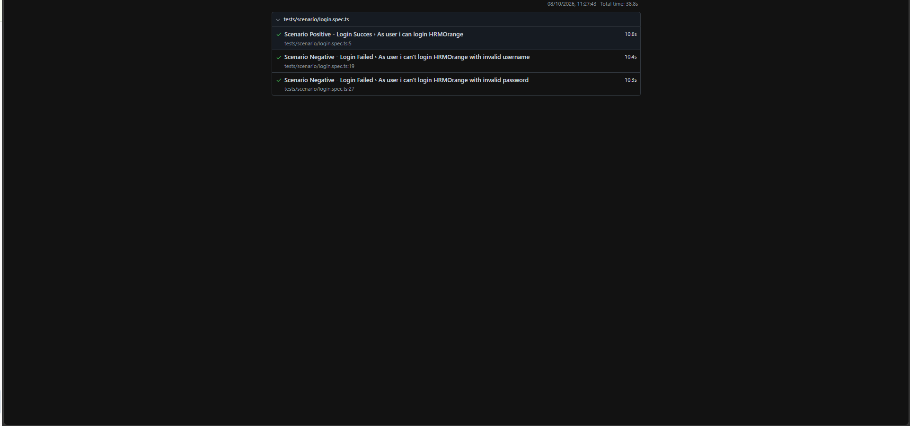
Test Result
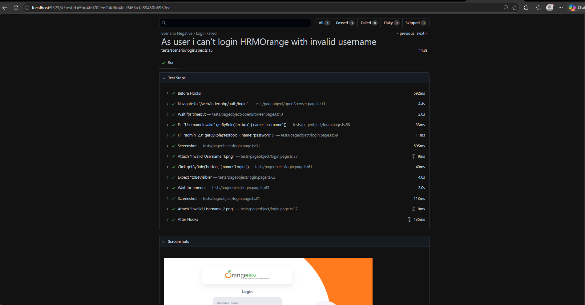
Test Result - Invalid Username
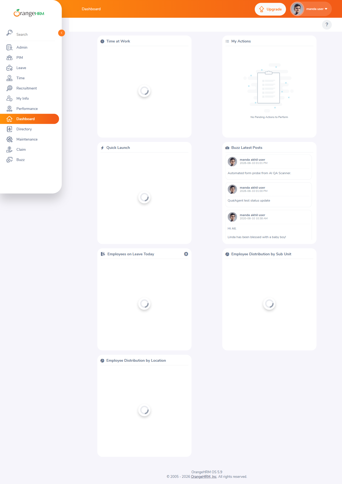
Login Sukses
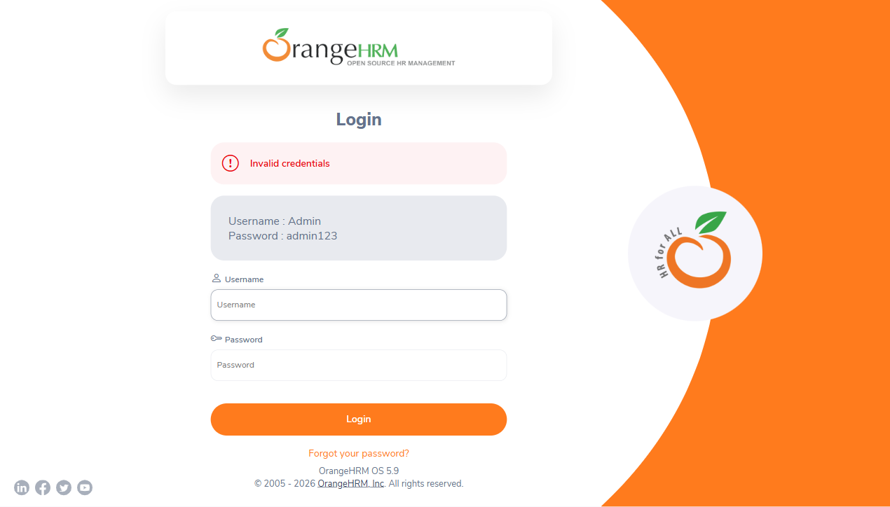
Invalid Username
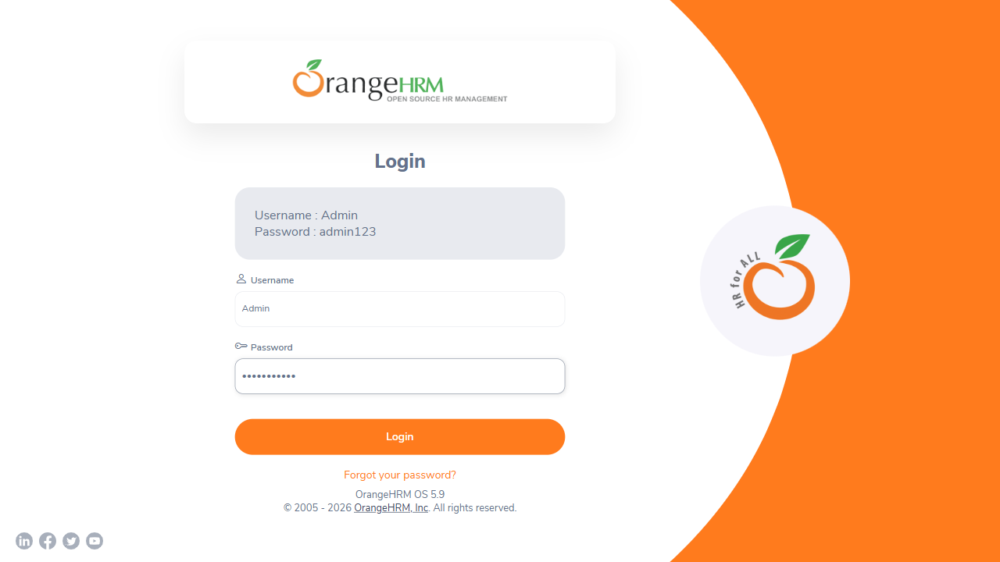
Invalid Password Sebelum Klik Login

Invalid Password
Running Test
Katalon
TC Login Sukses
import com.kms.katalon.core.webui.keyword.WebUiBuiltInKeywords as WebUI
import static com.kms.katalon.core.testobject.ObjectRepository.findTestObject
import CustomKeywords
WebUI.openBrowser('https://opensource-demo.orangehrmlive.com/')
WebUI.maximizeWindow()
WebUI.setText(findTestObject('Object Repository/Login/input_Username'), 'Admin')
WebUI.setText(findTestObject('Object Repository/Login/input_Password'), 'admin123')
CustomKeywords.'com.helpers.EvidenceHelper.takeScreenshot'('Login_Success')
WebUI.click(findTestObject('Object Repository/Login/btn_login'))
WebUI.delay(3)
CustomKeywords.'com.helpers.EvidenceHelper.takeScreenshot'('Login_Success')
WebUI.closeBrowser()TC Login Gagal
import com.kms.katalon.core.webui.keyword.WebUiBuiltInKeywords as WebUI
import static com.kms.katalon.core.testobject.ObjectRepository.findTestObject
import CustomKeywords
WebUI.openBrowser('https://opensource-demo.orangehrmlive.com/')
WebUI.maximizeWindow()
WebUI.setText(findTestObject('Object Repository/Login/input_Username'), 'Admin')
WebUI.setText(findTestObject('Object Repository/Login/input_Password'), 'passwordInvalid')
CustomKeywords.'com.helpers.EvidenceHelper.takeScreenshot'('Login_PasswordInvalid')
WebUI.click(findTestObject('Object Repository/Login/btn_login'))
WebUI.delay(3)
CustomKeywords.'com.helpers.EvidenceHelper.takeScreenshot'('Login_PasswordInvalid')
CustomKeywords.'com.helpers.EvidenceHelper.resetCounter'()
WebUI.setText(findTestObject('Object Repository/Login/input_Username'), 'usernameInvalid')
WebUI.setText(findTestObject('Object Repository/Login/input_Password'), 'admin123')
CustomKeywords.'com.helpers.EvidenceHelper.takeScreenshot'('Login_UsernameInvalid')
WebUI.delay(3)
CustomKeywords.'com.helpers.EvidenceHelper.takeScreenshot'('Login_UsernameInvalid')
WebUI.closeBrowser()EvidenceHelper.groovy
package com.helpers
import com.kms.katalon.core.annotation.Keyword
import com.kms.katalon.core.webui.keyword.WebUiBuiltInKeywords as WebUI
import com.kms.katalon.core.configuration.RunConfiguration
import java.time.ZonedDateTime
import java.time.ZoneId
import java.time.format.DateTimeFormatter
import java.io.File
public class EvidenceHelper {
public static String sessionFolder = ""
public static int stepCount = 1
public static void initSessionFolder() {
if (sessionFolder.isEmpty()) {
ZonedDateTime now = ZonedDateTime.now(ZoneId.of("Asia/Jakarta"))
String timestamp = now.format(DateTimeFormatter.ofPattern("yyyy-MM-dd_HH-mm-ss"))
// Menggunakan absolute path project Katalon agar lokasi file terjamin pasti
String projectDir = RunConfiguration.getProjectDir()
sessionFolder = projectDir + File.separator + "evidence" + File.separator + timestamp
}
}
@Keyword
public static void takeScreenshot(String scenarioName) {
if (sessionFolder.isEmpty()) {
initSessionFolder()
}
// Buat folder skenario di dalam folder timestamp
String dirPath = sessionFolder + File.separator + scenarioName
File dir = new File(dirPath)
if (!dir.exists()) {
dir.mkdirs() // Buat direktori beserta parent folder jika belum ada
}
// Path lengkap file gambar
String filePath = dirPath + File.separator + scenarioName + "_" + stepCount + ".png"
// Ambil screenshot
WebUI.takeScreenshot(filePath)
stepCount++ // Increment nomor step
}
@Keyword
public static void resetCounter() {
stepCount = 1
}
}Evidence
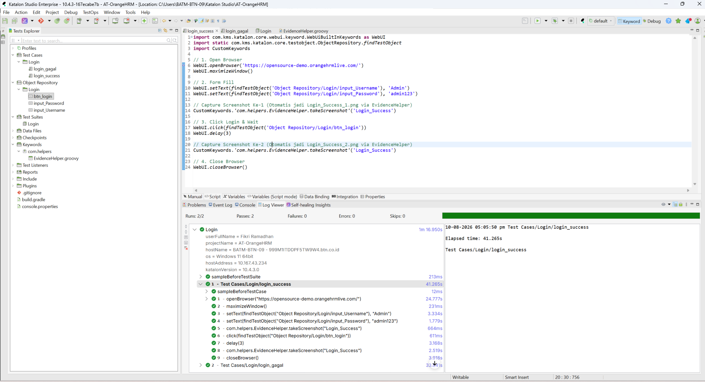
Test Result
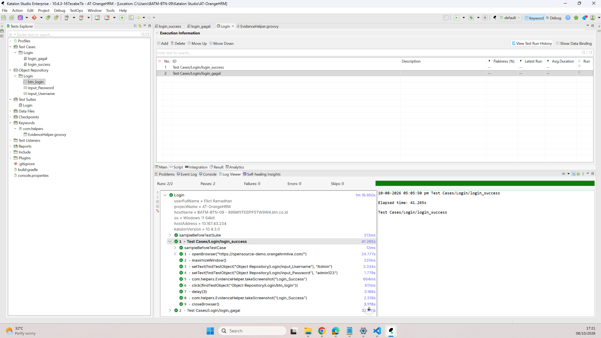
Test Result - Test Suites
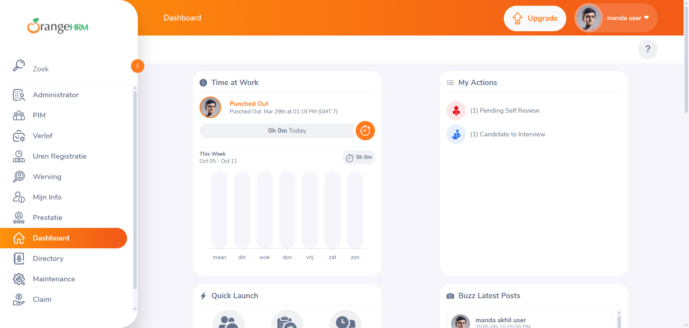
Login Sukses
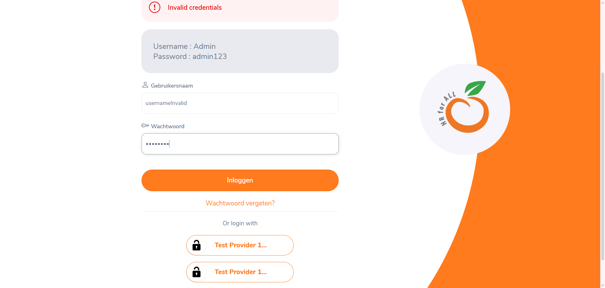
Username Invalid Sebelum Klik Login
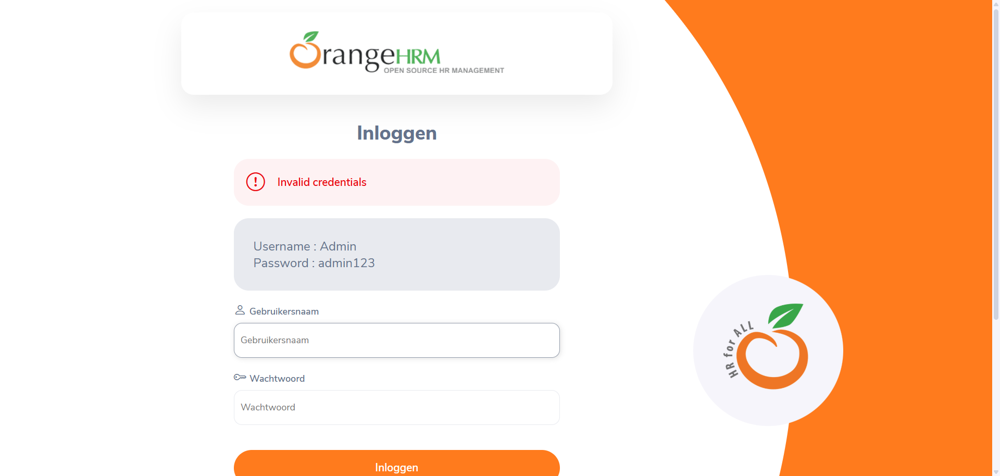
Username Invalid
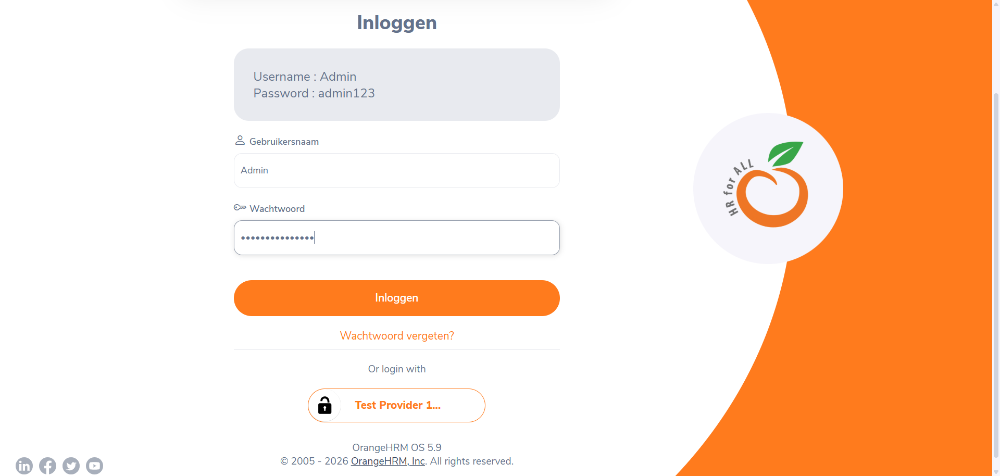
Password Invalid Sebelum Klik Login
Running Test
Butuh Sistem Anda Diuji?
Mari diskusikan bagaimana saya bisa membantu tim Anda mendeteksi bug lebih awal, mengotomatisasi skenario pengujian, dan merilis produk dengan percaya diri.